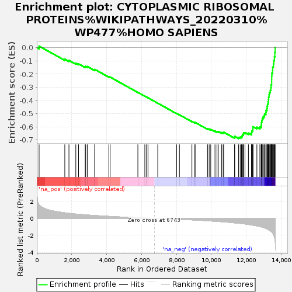
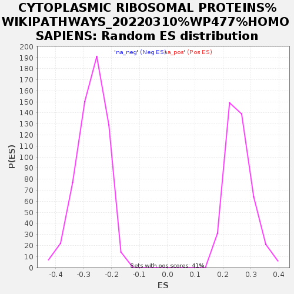

| | | Dataset | GSEA_GSE185657 |
| Phenotype | NoPhenotypeAvailable |
| Upregulated in class | na_neg |
| GeneSet | CYTOPLASMIC RIBOSOMAL PROTEINS%WIKIPATHWAYS_20220310%WP477%HOMO SAPIENS |
| Enrichment Score (ES) | -0.6880315 |
| Normalized Enrichment Score (NES) | -2.536115 |
| Nominal p-value | 0.0 |
| FDR q-value | 0.0 |
| FWER p-Value | 0.0 |
Table: GSEA Results Summary

Fig 1: Enrichment plot: CYTOPLASMIC RIBOSOMAL PROTEINS%WIKIPATHWAYS_20220310%WP477%HOMO SAPIENS
Profile of the Running ES Score & Positions of GeneSet Members on the Rank Ordered List
| SYMBOL | RANK IN GENE LIST | RANK METRIC SCORE | RUNNING ES | CORE ENRICHMENT | | 1 | RPL10A | 132 | 1.573 | 0.0125 | No |
| 2 | RPL12 | 1605 | 0.644 | -0.0867 | No |
| 3 | RPS8 | 1843 | 0.590 | -0.0958 | No |
| 4 | RPL27 | 2236 | 0.500 | -0.1176 | No |
| 5 | MRPL19 | 2393 | 0.470 | -0.1225 | No |
| 6 | RPS25 | 2773 | 0.408 | -0.1446 | No |
| 7 | RPL8 | 2804 | 0.403 | -0.1411 | No |
| 8 | RPS11 | 2900 | 0.387 | -0.1426 | No |
| 9 | RPL23 | 3323 | 0.329 | -0.1691 | No |
| 10 | RPS6KB1 | 3329 | 0.328 | -0.1648 | No |
| 11 | RPL5 | 4130 | 0.230 | -0.2204 | No |
| 12 | RPL4 | 4202 | 0.224 | -0.2225 | No |
| 13 | RPS24 | 5792 | 0.068 | -0.3384 | No |
| 14 | RPS6KA3 | 6191 | 0.037 | -0.3672 | No |
| 15 | RPL38 | 6287 | 0.028 | -0.3738 | No |
| 16 | RPS6 | 6372 | 0.019 | -0.3797 | No |
| 17 | RPL9 | 6932 | -0.016 | -0.4206 | No |
| 18 | RPS16 | 8012 | -0.102 | -0.4985 | No |
| 19 | RPS10 | 8174 | -0.116 | -0.5087 | No |
| 20 | RPL35A | 8889 | -0.186 | -0.5586 | No |
| 21 | RPL41 | 9062 | -0.203 | -0.5684 | No |
| 22 | RPS3 | 9069 | -0.204 | -0.5660 | No |
| 23 | RPL35 | 9784 | -0.291 | -0.6144 | No |
| 24 | RPL27A | 9878 | -0.304 | -0.6170 | No |
| 25 | RPL13 | 9968 | -0.314 | -0.6191 | No |
| 26 | RPL34 | 10212 | -0.346 | -0.6321 | No |
| 27 | RPL13A | 10327 | -0.362 | -0.6353 | No |
| 28 | RPL22 | 10401 | -0.372 | -0.6355 | No |
| 29 | RPS27 | 10586 | -0.401 | -0.6433 | No |
| 30 | RPS2 | 10678 | -0.417 | -0.6442 | No |
| 31 | RPL7A | 10712 | -0.420 | -0.6407 | No |
| 32 | RPS7 | 11336 | -0.537 | -0.6789 | No |
| 33 | RPS21 | 11338 | -0.538 | -0.6714 | No |
| 34 | RPS23 | 11565 | -0.583 | -0.6798 | Yes |
| 35 | RPS6KB2 | 11657 | -0.603 | -0.6780 | Yes |
| 36 | RPS20 | 11729 | -0.618 | -0.6745 | Yes |
| 37 | RPL10 | 11766 | -0.628 | -0.6683 | Yes |
| 38 | RPL6 | 11782 | -0.630 | -0.6605 | Yes |
| 39 | RPS12 | 11844 | -0.643 | -0.6559 | Yes |
| 40 | RPSA | 11845 | -0.643 | -0.6468 | Yes |
| 41 | RPL18A | 11931 | -0.667 | -0.6437 | Yes |
| 42 | RPL32 | 12127 | -0.726 | -0.6478 | Yes |
| 43 | RPLP2 | 12305 | -0.778 | -0.6498 | Yes |
| 44 | RPS6KA6 | 12311 | -0.780 | -0.6392 | Yes |
| 45 | RPL3 | 12333 | -0.792 | -0.6296 | Yes |
| 46 | RPL30 | 12378 | -0.810 | -0.6214 | Yes |
| 47 | RPL23A | 12382 | -0.811 | -0.6101 | Yes |
| 48 | RPS28 | 12386 | -0.813 | -0.5989 | Yes |
| 49 | RPL28 | 12612 | -0.895 | -0.6028 | Yes |
| 50 | RPL37A | 12784 | -0.972 | -0.6017 | Yes |
| 51 | RPS14 | 12858 | -1.008 | -0.5928 | Yes |
| 52 | RPL15 | 12868 | -1.015 | -0.5792 | Yes |
| 53 | RPL36A | 12878 | -1.022 | -0.5654 | Yes |
| 54 | RPS6KA1 | 12894 | -1.030 | -0.5520 | Yes |
| 55 | RPS4Y1 | 12918 | -1.043 | -0.5390 | Yes |
| 56 | RPS17 | 12960 | -1.069 | -0.5269 | Yes |
| 57 | RPL29 | 13022 | -1.116 | -0.5157 | Yes |
| 58 | RPLP0 | 13050 | -1.136 | -0.5016 | Yes |
| 59 | RPS18 | 13126 | -1.188 | -0.4904 | Yes |
| 60 | RPS5 | 13139 | -1.195 | -0.4744 | Yes |
| 61 | RPS26 | 13191 | -1.247 | -0.4606 | Yes |
| 62 | RPS3A | 13198 | -1.255 | -0.4433 | Yes |
| 63 | RPL14 | 13223 | -1.273 | -0.4271 | Yes |
| 64 | RPS29 | 13255 | -1.318 | -0.4108 | Yes |
| 65 | RPS6KA2 | 13277 | -1.346 | -0.3934 | Yes |
| 66 | RPS13 | 13283 | -1.350 | -0.3747 | Yes |
| 67 | RPL7 | 13306 | -1.382 | -0.3568 | Yes |
| 68 | RPS15 | 13324 | -1.401 | -0.3383 | Yes |
| 69 | RPL36 | 13380 | -1.479 | -0.3215 | Yes |
| 70 | RPS27A | 13414 | -1.525 | -0.3024 | Yes |
| 71 | RPS4X | 13426 | -1.541 | -0.2815 | Yes |
| 72 | RPL39 | 13459 | -1.611 | -0.2611 | Yes |
| 73 | RPL37 | 13460 | -1.615 | -0.2383 | Yes |
| 74 | RPL19 | 13462 | -1.618 | -0.2156 | Yes |
| 75 | RPS19 | 13469 | -1.629 | -0.1930 | Yes |
| 76 | RPL26 | 13514 | -1.739 | -0.1717 | Yes |
| 77 | RPS9 | 13518 | -1.749 | -0.1473 | Yes |
| 78 | RPLP1 | 13557 | -1.887 | -0.1235 | Yes |
| 79 | RPL21 | 13586 | -2.017 | -0.0971 | Yes |
| 80 | RPL18 | 13613 | -2.171 | -0.0684 | Yes |
| 81 | RPL31 | 13641 | -2.446 | -0.0358 | Yes |
| 82 | RPL11 | 13658 | -2.702 | 0.0011 | Yes |
Table: GSEA details [plain text format]

Fig 2: CYTOPLASMIC RIBOSOMAL PROTEINS%WIKIPATHWAYS_20220310%WP477%HOMO SAPIENS: Random ES distribution
Gene set null distribution of ES for CYTOPLASMIC RIBOSOMAL PROTEINS%WIKIPATHWAYS_20220310%WP477%HOMO SAPIENS